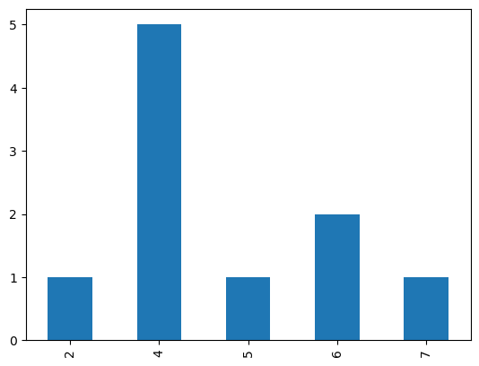
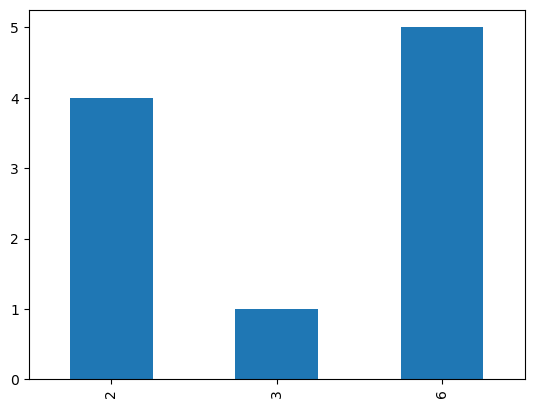
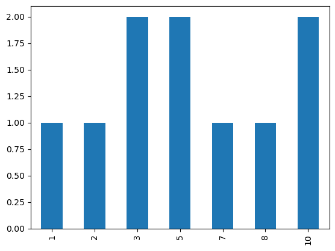
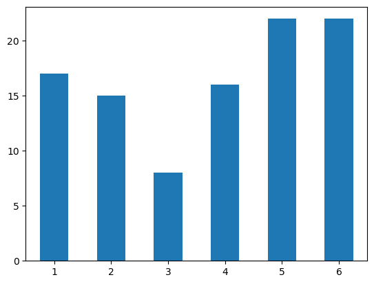
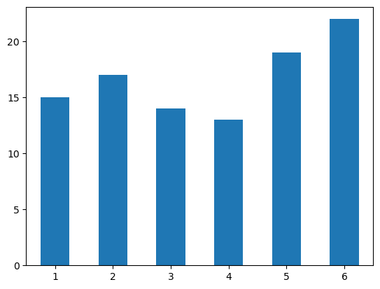
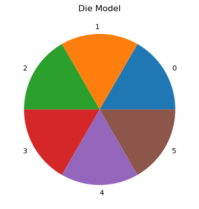
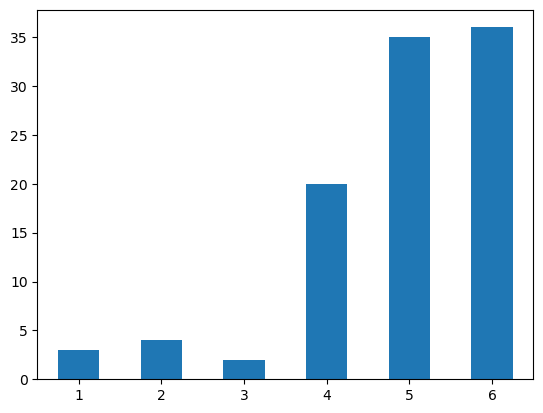
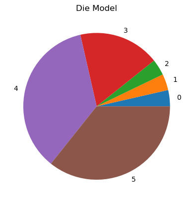

import pandas as pd
import numpy as npNB: Classes Example
Here’s an example of a class motivated by our earlier observation that functions come in groups.
Set Up
Method 1: Nothing Special
We define a set of functions that work in a sequence, where the return value of one is the argument of the other.
Define Functions
def create_die(weights):
n_sides = len(weights)
my_probs = [i/sum(weights) for i in weights]
my_die = pd.DataFrame({
'side': range(1, n_sides + 1),
'weights': my_probs
})
return my_die
def roll_dice(my_die, n_rolls=1):
results = []
for i in range(n_rolls):
result = my_die.side.sample(weights=my_die.weights).values[0]
results.append(result)
return pd.Series(results)
def plot_results(my_results):
my_results.value_counts().sort_index().plot.bar();Create Instances
n_rolls = 10fair_die = create_die([1,1,1,1,1,1,1])fair_die| side | weights | |
|---|---|---|
| 0 | 1 | 0.142857 |
| 1 | 2 | 0.142857 |
| 2 | 3 | 0.142857 |
| 3 | 4 | 0.142857 |
| 4 | 5 | 0.142857 |
| 5 | 6 | 0.142857 |
| 6 | 7 | 0.142857 |
fair_results = roll_dice(fair_die, n_rolls)fair_results0 4
1 1
2 2
3 6
4 4
5 6
6 2
7 2
8 5
9 2
dtype: int64plot_results(fair_results)
unfair_die = create_die([1,1,1,1,1,5])
unfair_results = roll_dice(unfair_die, n_rolls)
plot_results(unfair_results)
Doing it all at once
def do_it_all(weights):
plot_results(roll_dice(create_die(weights), n_rolls))do_it_all(roll_dice(create_die([1,1,1,1,1,10]), n_rolls))
Method 2: With Globals
Define Methods
def create_die2(die_id):
global config
config[die_id]['die'] = None
weights = config[die_id]['weights']
n_sides = len(weights)
my_probs = [i/sum(weights) for i in weights]
config[die_id]['die'] = pd.DataFrame({
'side': range(1, n_sides + 1),
'weights': my_probs
})
def roll_dice2(die_id):
global config
global n_rolls2
config[die_id]['results'] = None
my_die = config[die_id]['die']
results = []
for i in range(n_rolls2):
result = my_die.side.sample(weights=my_die.weights).values[0]
results.append(result)
config[die_id]['results'] = pd.Series(results)
def plot_results2(die_id):
global config
my_results = config[die_id]['results']
my_results.value_counts().sort_index().plot.bar();
def do_it_all2(die_id):
global config
global n_rolls2
print("Die ID:", die_id)
print("Weights:", config[die_id]['weights'])
print("Rolls:", n_rolls2)
create_die2(die_id)
roll_dice2(die_id)
plot_results2(die_id)Populate Config
We populate our configuration config with some instances.
config = {
'fair': {
'weights': [1,1,1,1,1,1]
},
'unfair': {
'weights': [1,1,1,1,10,100],
}
}Call Main Function
do_it_all2('fair')Die ID: fair
Weights: [1, 1, 1, 1, 1, 1]
Rolls: 10
do_it_all2('unfair')Die ID: unfair
Weights: [1, 1, 1, 1, 10, 100]
Rolls: 10
n_rolls2 = 1000 # We change this, but it will affect all uses of the functions until we change it.
do_it_all2('unfair')Die ID: unfair
Weights: [1, 1, 1, 1, 10, 100]
Rolls: 1000
Method 3: As Class
Define a class that contains the config data structure and all the functions as attributes and methods.
class DieGame():
def __init__(self):
self.n_rolls = 10
self.weights = [1,1,1,1,1,1]
def create_die(self):
self.n_sides = len(self.weights)
self.my_probs = [i/sum(self.weights) for i in self.weights]
self.die = pd.DataFrame({
'side': range(1, self.n_sides + 1),
'weights': self.my_probs
})
def roll_die(self):
results = []
for i in range(self.n_rolls):
result = self.die.side.sample(weights=self.die.weights).values[0]
results.append(result)
self.results = pd.Series(results)
def plot_results(self):
prob_model = pd.Series({i+1:round(p, 2) for i, p in enumerate(self.my_probs)})
print("Sides:", self.n_sides)
print("Model:")
print(prob_model)
print("Rolls:", self.n_rolls)
self.results.value_counts().sort_index().plot.bar(rot=0);
# We add another method because it's so easy :-)
def plot_probs(self):
pd.Series(self.my_probs).plot.pie(title="Die Model")
def do_it_all(self):
self.create_die()
self.roll_die()
self.plot_results()game_1 = DieGame()
game_1.n_rolls = 100
game_1.do_it_all()Sides: 6
Model:
1 0.17
2 0.17
3 0.17
4 0.17
5 0.17
6 0.17
dtype: float64
Rolls: 100
game_1.plot_probs()
game_2 = DieGame()
game_2.n_rolls = 100
game_2.weights = [1,1,1,5,10,10]
game_2.do_it_all()Sides: 6
Model:
1 0.04
2 0.04
3 0.04
4 0.18
5 0.36
6 0.36
dtype: float64
Rolls: 100
game_2.plot_probs()
Conclusions
The OOP approach handles scoping issues as well as data management.
Notice how the dictionary is replaced by the object.
Not only does it provide a place to store the data, it also provides a schema for it: * You don’t need to remember what keys to put in the data dictionary of method 2. The object specifies them.
Notice also that we don’t pass arguments to the object as we do with functions (although we can).
We assign values to attributes directly.
Can you think of any other advantages or disadvantages?